Bike, easy (RPE 3-4)
5 min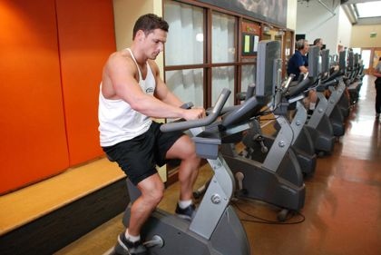
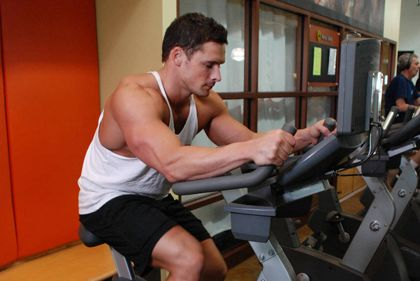
Body-Solid G9S home gym · bands · treadmill · bike
Glutes, legs, back, core and cardio. Every session about 60 minutes. You set all weights and pick the band strength. Tap the box when an exercise is done; the dashed field remembers your pin number or band.
Mon · ~60 min
Glutes & hamstrings + lats + core + bike sprints 10 min
7 min


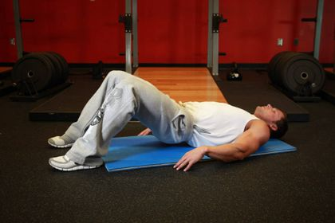
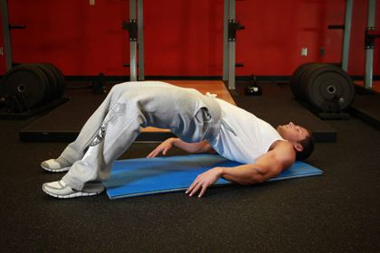
1 set of A1, then 1 set of A2, rest 60-90 sec, repeat
Feet high and wide on press plate for more glutes; back pad set so knees are at 90 deg; don't lock out knees
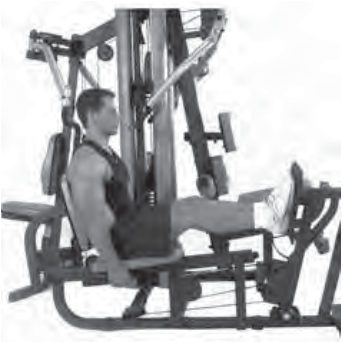
Anchored at chest height; press straight out, resist the twist
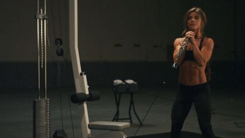
Lat Bar on high pulley; pull to upper chest, never toward head or neck
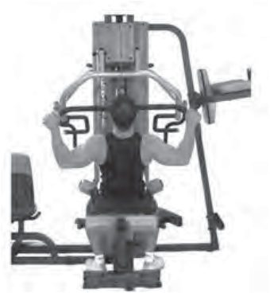
Stand on band hip-width, handles in hands; hinge at hips, soft knees, flat back, squeeze glutes to stand
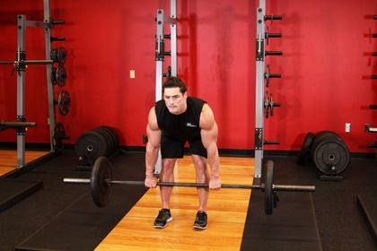
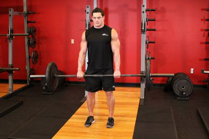
Ankle Strap/cuff on low pulley; face machine, hold on, kick straight leg back. Band version: Band Standing Kickback (anchored low, hooked to ankle)
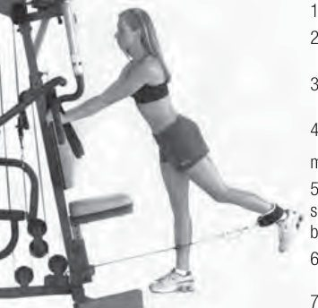
Lying on back, band across hips, handles pressed to floor; 2-sec squeeze at top
Heel under bottom leg pad, knee slightly below top roller pad
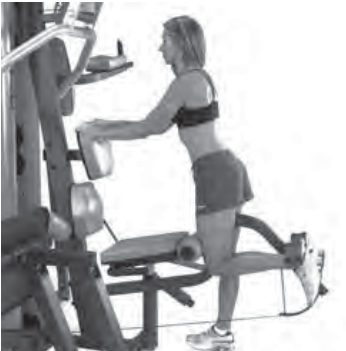
Band clipped between both ankles (or stand on band, hold handles); stay in a half squat
Bike sprints 10 min
2 min easy, 6 rounds of 20 sec hard (RPE 9) / 40 sec easy, 2 min easy
5 min, hold each 20-30 sec, no bouncing
ankle over opposite knee, pull legs in
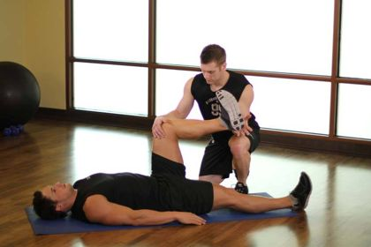
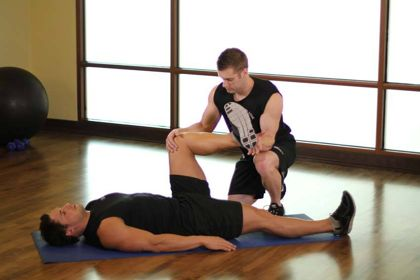
heel on a low surface, leg straight, hinge forward
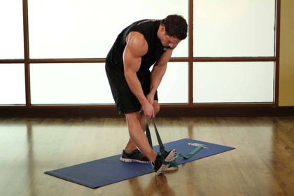

standing, pull heel toward glute
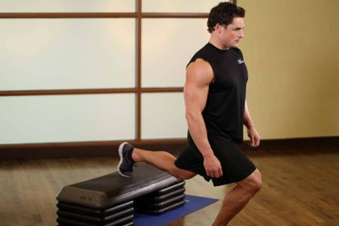
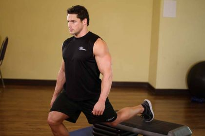
half-kneeling lunge
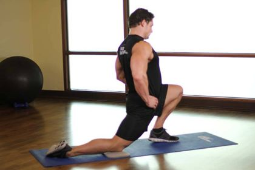
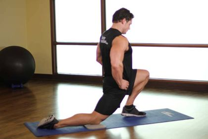
seated butterfly, knees toward floor
hold frame with both hands, sit hips back
Tue · ~60 min
Treadmill incline walk Zone 2 30 min + band core & back
easy (RPE 3-4)
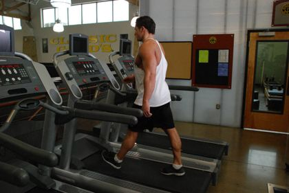
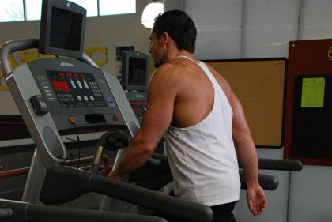
at RPE 5-6
3 rounds, 60 sec rest between rounds (~15 min)
Tricep/Ab Strap on mid pulley; Pec Dec Arms moved out of the way
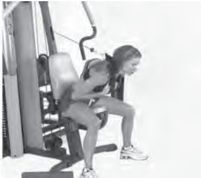
Anchored at chest height; pull handles to ribs, squeeze shoulder blades together
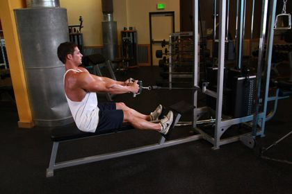
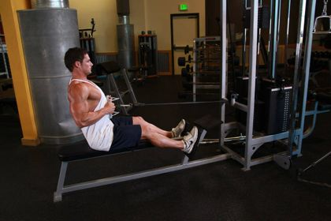
Light band anchored at face height; pull toward forehead, elbows high
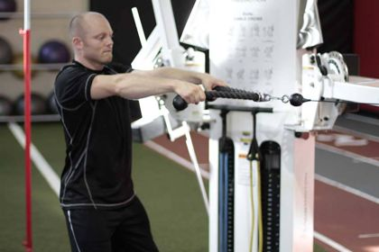
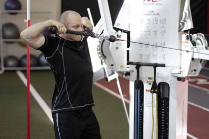
Forearms down, body in a straight line
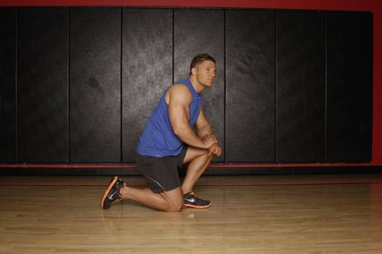
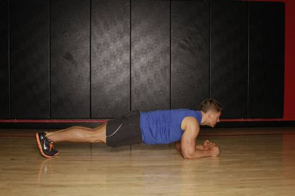
5 min, hold each 20-30 sec, no bouncing
ankle over opposite knee, pull legs in
heel on a low surface, leg straight, hinge forward
standing, pull heel toward glute
half-kneeling lunge
seated butterfly, knees toward floor
hold frame with both hands, sit hips back
Wed · ~60 min
Thighs (front, inner, outer) + mid & lower back + treadmill incline walk 10 min
7 min
1 set of A1, then 1 set of A2, rest 60-90 sec, repeat
Press Arm in Storage position, back pad flat; knees over top roller pads, feet under bottom leg pads
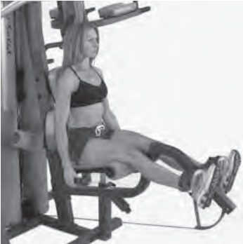
Stand on band in a wide stance, toes out, handles at shoulders (inner thighs + glutes)
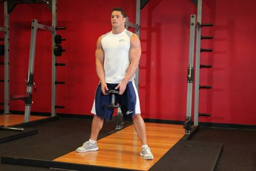
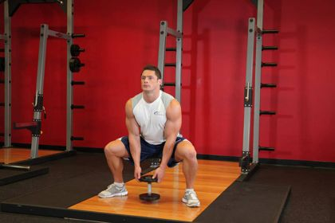
Chest flat on pad; pull handles until even with midsection
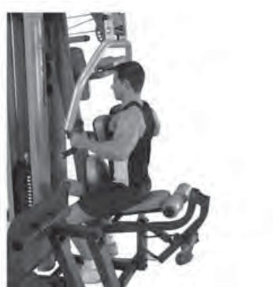
Bodyweight; step back, back knee drops toward floor
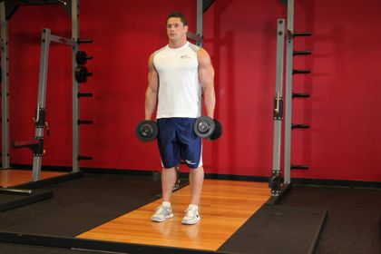
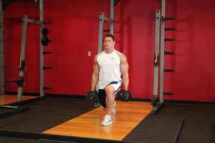
Ankle Strap/cuff on low pulley; stand 1-2 ft away, working leg is the one farther from the machine; hold back pad. Band version: Band Hip Abduction (anchored low, hooked to outside ankle, sweep leg out)
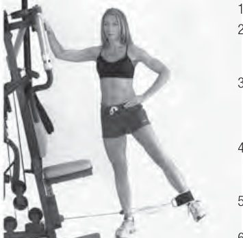
Anchored low, hooked to the ankle nearest the machine; sweep that leg across in front of the other (inner thigh)
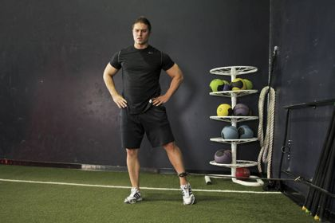
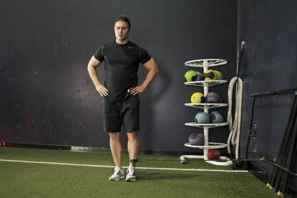
Press Arm in Mid Row position, seat at highest position, facing in; hold mid row handles, arms and back straight, lean back from the hips to 45 deg
Lower back pressed to floor
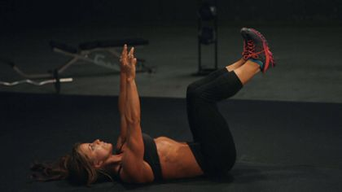
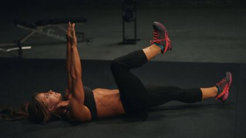
Treadmill incline walk 10 min
steady at RPE 6, roughly 8-12% incline
5 min, hold each 20-30 sec, no bouncing
ankle over opposite knee, pull legs in
heel on a low surface, leg straight, hinge forward
standing, pull heel toward glute
half-kneeling lunge
seated butterfly, knees toward floor
hold frame with both hands, sit hips back
Thu · ~60 min
Bike 4x4 intervals 28 min + core
building from easy to moderate
4 min hard (RPE 8) / 3 min easy (RPE 3), x4. Weeks 1-2: 3 rounds.
3 rounds, 60 sec rest between rounds (~13 min)
Tricep/Ab Strap on mid pulley, Press Arm in Storage position; alternate left and right
Anchored high; pull handle diagonally down across your body to the opposite hip, rotate through the torso
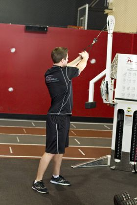
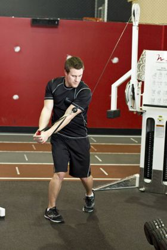
Lying on back, curl knees toward chest, lift hips slightly
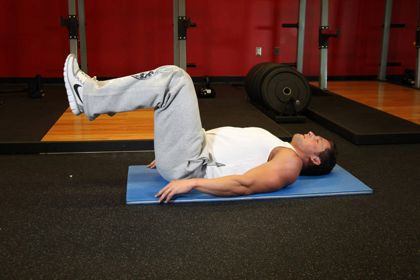
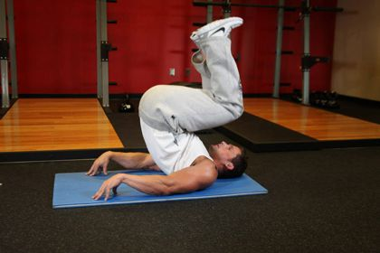
Hands on floor, drive knees toward chest
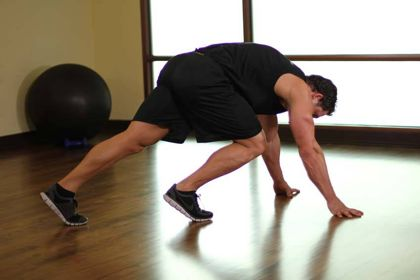
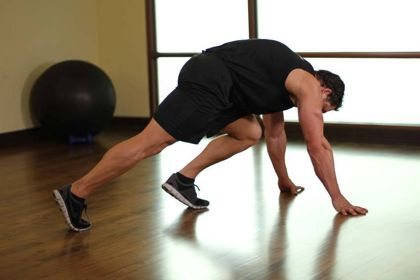
5 min, hold each 20-30 sec, no bouncing
ankle over opposite knee, pull legs in
heel on a low surface, leg straight, hinge forward
standing, pull heel toward glute
half-kneeling lunge
seated butterfly, knees toward floor
hold frame with both hands, sit hips back
Fri · ~60 min
Glutes & legs + lats + core + bike tempo 10 min
7 min
1 set of A1, then 1 set of A2, rest 60-90 sec, repeat
Normal foot position; back pad set so knees are at 90 deg; don't lock out knees
Anchored low, face away, handles between legs; hinge back, drive hips forward, squeeze glutes
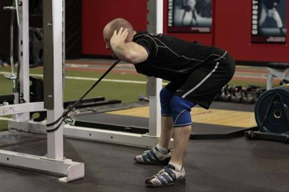
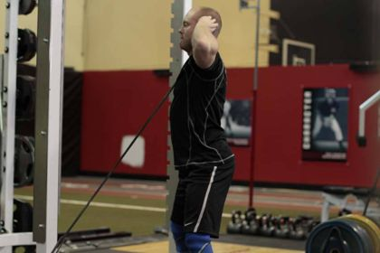
Same setup as Monday
Front foot on band, handles at shoulders; back knee drops toward floor
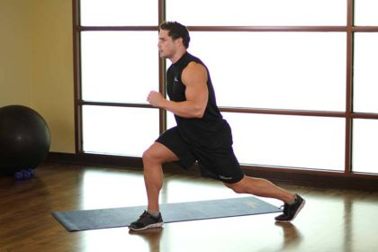
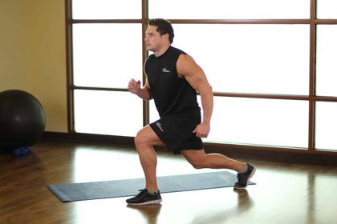
Same setup as Monday. Band version: Band Standing Kickback
Stand on band with working foot, handle in opposite hand; free hand on frame for balance; hinge on one leg
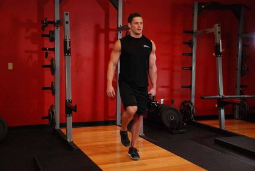
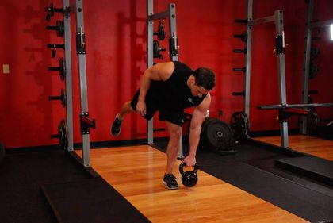
Tricep/Ab Strap on mid pulley; Pec Dec Arms moved out of the way
Bodyweight; 2-sec squeeze at top
Bike tempo 10 min
steady at RPE 6-7
5 min, hold each 20-30 sec, no bouncing
ankle over opposite knee, pull legs in
heel on a low surface, leg straight, hinge forward
standing, pull heel toward glute
half-kneeling lunge
seated butterfly, knees toward floor
hold frame with both hands, sit hips back
Sat · ~60 min
Bike + treadmill Zone 2 40 min + band glute & thigh circuit
40 min
at RPE 5-6 (first 3 min easy)
at RPE 5-6
3 rounds, 45 sec rest between rounds (~15 min)
Stand on band, handles at shoulders
Anchored low, hooked to ankle; face machine, hold on, kick straight leg back
Anchored low, hooked to the ankle nearest the machine; sweep leg across
Band between ankles; stay in a half squat
5 min, hold each 20-30 sec, no bouncing
ankle over opposite knee, pull legs in
heel on a low surface, leg straight, hinge forward
standing, pull heel toward glute
half-kneeling lunge
seated butterfly, knees toward floor
hold frame with both hands, sit hips back
Sun · ~60 min
Rest or easy recovery
RPE 3-4, then 10-15 min full-body stretching with 20-30 sec holds
Photos: machine exercises are from the workout pages of the Body-Solid G9 owner's manual (the full-size exercise chart that ships with the gym is not published online). Band and bodyweight exercises use the nearest demo from the Free Exercise DB (github.com/yuhonas/free-exercise-db); where the caption says "closest match" the demo uses different equipment, so follow the written cue. Exercises with no close match show no photo.